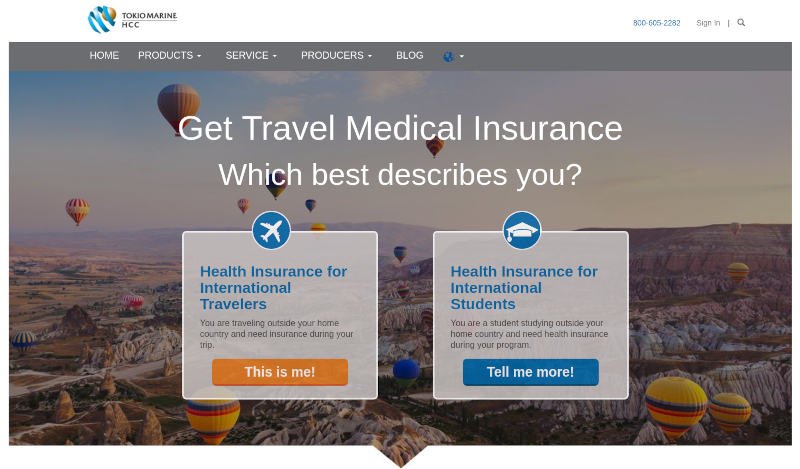

HCCMIS
2015-04-01

Company
MIS Group (HCC Medical Insurance Services, HCCMIS) was established in 1998 in Indianapolis, IN. They offer medical travel insurance to customers through their website.
In June 2015, HCC Medical was acquired by Tokio Marine Holdings Inc.
Role

I was the sole UI Developer hired under a contract in April 2015 with the possibility to become full-time.
I was tasked with creating CMS page templates for 1 major project and 2 smaller projects using responsive HTML, CSS, Bootstrap and some JavaScript validation.
We used git internally to commit and manage code across projects.
I received layered PSD files from the Graphic Designer.
Using those I recreated the layouts in pure code.
This was done to ensure cross-browser compatibility and speed.
Sometimes I used Photoshop for image resizing.
I took it upon myself to create a style guide for each project to ensure UI consistency. While making sure the templates met company design and coding standards.
I tested my templates in multiple browsers before committing to the repo.
Team
I was part of a small three person team that included:
- My manager Bill who worked on the back-end PHP programming for the CMS.
- The graphic designer Amy who was technically part of the marketing department.
- And, myself. I was responsible for converting the designs into responsive page templates.
Nick, Bill's Boss, told Amy and I he was very happy with the work we did.
Technology

They used the PHP-based Cacade CMS for most of their projects.
I was provided a laptop with the following tools:
- Windows 7 Enterprise
- Microsoft Office 2013
- Adobe Photoshop & Illustrator
- Filezilla FTP client
- Git
- Google Chrome Developer Tools
Projects
I worked on three projects:
- The main HCCMIS.com responsive website redesign
- Responsive Ticket Refund
- Responsive Atlas Travel
Hiring Freeze
This was only a short-term contract role.
But, because they liked me and the quality of work I had completed. They had extended my contract to September 2015 so I could complete the 2 smaller projects.
During this time HCCMIS was aquired by Tokio Marine Holdings Inc.
None of the current staff, nor I, was made aware of this until August of 2015. I was informed that due to the merger HCCMIS was placed under a hiring freeze.
This meant they couldn't extend my contract again or hire me as a full-time employee.
So, before my contract ended I started looking for other opportunities.